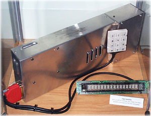
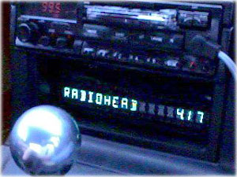
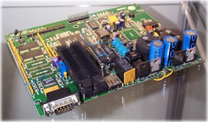

MP3 Mobile
by Hugo Fiennes
The whole idea got rolling in early 1998 when I decided I wanted to upgrade my car stereo in my Mazda MX5 (Miata to Americans, Eunos Roadster for Japanese!). Up until MP3mobile, I'd been using a Sony TCD-D3 DAT Walkman on a car-mount arm as the primary audio source, which was great: long play, good quality audio - just that I never seemed to have the tapes with me that suited my mood, and the D3 doesn't have useful things like track programming or repeat.
While looking at new head units/autochangers, two thoughts struck me:
- 6 or 10 CDs isn't a very big choice - even blowing your own CDRs with your favourite music.
- The boot in the MX5 is small enough already without an autochanger box taking up room.
- The price of a new head unit and autochanger is awfully close to a complete PC.
So, I built an in-car MP3 player. The result isn't miniature, like the MPman, but does take no 'user-accessible' space in the car interior, and is pretty secure.
The basic concept was simple: a wide range of great quality music (all of which I like, unlike compilations) whenever I want it.
Full details of the MP3 Mobile can be found online here.
Birth of an empeg
Meet Jack
In June 1998, following considerable interest in the MP3 Mobile, Hugo decided to produce a commercial version and started a new company - empeg - to develop and market it.
Hugo worked with a talented hardware designer, Patrick Arnold, to design an in-dash MP3 player from scratch.
The first prototype, named Jack, was completed by Christmas 1998 and worked perfectly first time. You can see from the picture that most of the Mk.1 car player features were present in Jack, although two further prototypes were made before the Mk.1 design was finalised. Unfortunately the car player software is no longer compatible with Jack, so he has now taken pride of place in the empeg display cabinet.
Up to the release of the Mark 1 empeg player, in August 1999, practically all of the development was carried out by four engineers - Hugo, Patrick, Mike and Toby - from the comfort of Hugo's spare bedroom and dining room. Since then several more developers and administrative staff have joined the company, which now occupies an office and dispatch suite in Cambridge, UK.
And then there were two
In July 2000 the second major revision of empeg car started to ship. In fact it is the seventh revision of circuitry since Jack, and features more memory, Ethernet, microphone input and lots of other new features.
Rio Car
In November 2000 empeg was acquired by SONICblue Incorporated, and the car player became the Rio Car. A large production run of the latest Mk.2A revision was initiated. The player was largely unchanged apart from having more memory, but a new remote control was introduced along with new packaging and documentation.
The empeg prototype family tree
Each hand built car player prototype is given a name instead of a boring serial number. Here's the lineage to date:
| Player Issue |
Manf. date |
Used by |
Whereabouts |
| Jack 1 |
Oct 98 |
Hugo |
Display cabinet |
| Henry 2 |
Dec 98 |
Hugo, Mike, Toby |
Serial buffer (!) |
| Sonja 3 |
Jan 99 |
Hugo, Mike, Toby |
Toby |
| Kate 4 |
Feb 99 |
Hugo, John |
Unwell |
| Flat Eric 5 |
Nov 99 |
Hugo |
Bookcase |
| Marvin 6 |
Dec 99 |
Hugo, Peter, Toby |
Toby |
| Trillian |
7 Mar 00 |
Hugo, Mike |
Unwell |
| Gary 8 |
Jul 00 |
Hugo |
Board test |
| Seven 9 |
Oct 00 |
Hugo |
Hugo |
If you're wondering whether the names have any significance, most of them do:
Issue 1 was designed before the metalwork and wouldn't fit in a box, hence "Jack". In fact in later life he spent several months in a small cardboard box labelled "Jack in his box" - but now he takes pride of place in our display cabinet.
Henry and Sonja were named by Hugo, and there would appear to be no clever pun. We have a theory that his parents cats may be involved, however.
Kate suffered a construction problem in which a number of holes in the PCB were too small. We're not going to explain the rest.
Our move to fully surface mount production came with issue 5, and our new very flat prototype could be named nothing other than Flat Eric.
Issue 6 was the first unit to have networking, so Marvin Gaye's "I heard it through the grapevine" came to mind.
The reasoning behind Marvin was so subtle that everyone assumed it was simply named after the paranoid android from HHGTTG, and since we couldn't be bothered to argue the next unit was named Trillian.
The issue 8 unit was sent to the factory as a functional sample for the bed of nails test rig. Having been sent away for a long time we decided to name it Gary.
Finally, issue 9 - our latest prototype - has been named Seven. That would seem to be a fairly obviously choice.
Correlating issue numbers to build releases, Kate was the first Mk.1, Trillian the first Mk.2 and Seven is the first Mk.2A (a few production enhancements over the Mk.2).